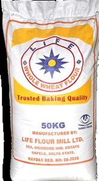
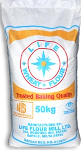
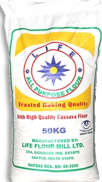
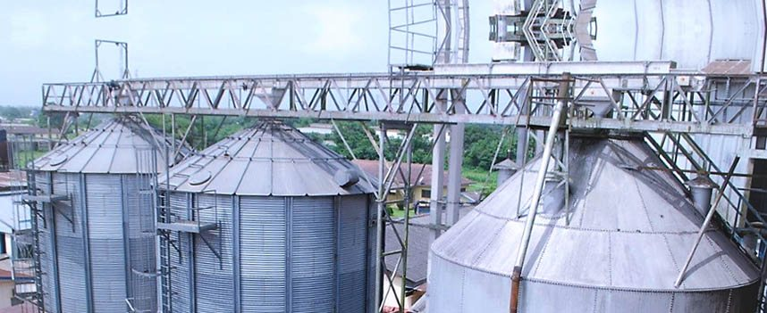
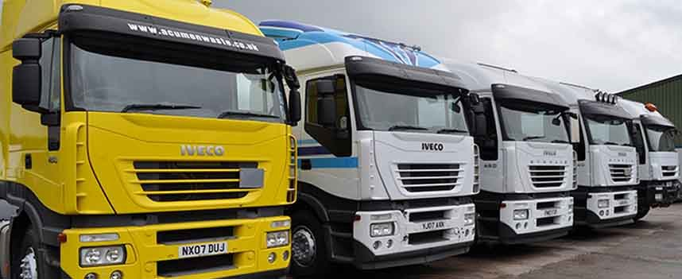
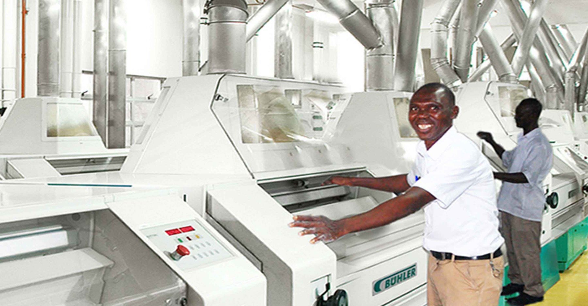
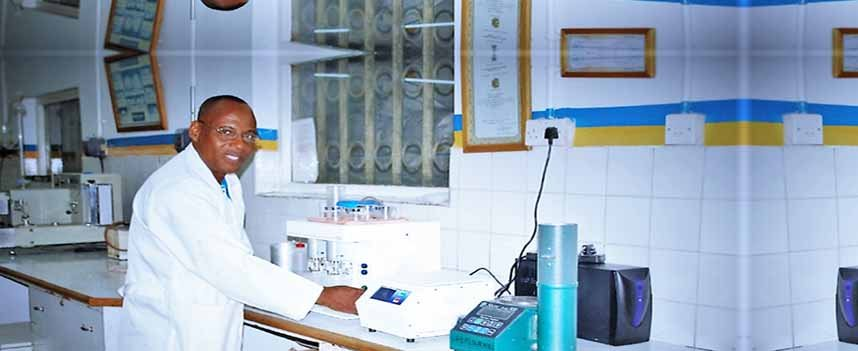

Life Wheat Flour
50kg



Wheat flour, whole wheat and semolina, milled on the banks of the river in Sapele.
50kg
50kg
50kg · with cassava flour
10kg & 5kg
Partner brand
Twenty-three acres on the river in Sapele. Wheat arrives by ship straight to our silos.




Bakers and distributors: call customer service on 0805 505 4535.